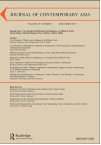

收录于合集
作品简介
【作者】
Kevin Gray ，苏塞克斯大学（University of Sussex）国际关系学副教授（Reader）。著有Korean Workers and Neoliberal Globalisation (Routledge, 2008), Labour and Development in East Asia: Social Forces and Passive Revolution (Routledge, 2015)。 Jong-Woon Lee ，远东大学（Far East University）副教授，曾任韩国著名智库韩国对外经济政策研究院（KIEP）高级研究员
【编译】 姚寰宇（国政学人编译员，山东大学东北亚学院硕士研究生）
【校对】 徐枫潇
【审核】 王国欣
** 【排版】** 贺奕
【来源】
Gray, K., & Lee, J. W. (2018). The rescaling of the Chinese state and Sino- North Korean relations: beyond state-centrism. Journal of Contemporary Asia , 48 (1), 113-132.
期刊介绍

《当代亚洲期刊》（Journal of Contemporary Asia）是一份1970年起出版的学术期刊。从2017年开始该期刊每年出版5期，内容涵盖亚洲的经济、政治和社会发展。2018年影响因子为2.030，在区域研究类SSCI期刊中排名第7/47。
中国国家的调整与中朝关系 ：超越国家中心主义
The rescaling of the Chinese state and Sino-North Korean relations:beyond state-centrism
内容提要
作者认为，中国政府经历了一次以地方分权（decentralization）为主要形式的深刻调整过程， 即权力从中央向省、市等地方行政权力机构和其他 主体 分散。 **** **** ****当前主流的社会建构主义（ social constructivist ）与权力政治（realpolitik）的分析视角，并没有充分考虑到中国的国内政治在过去四十年发生的深刻变化，及其对中朝关系的影响，也没有关注到中朝两国日常交往的主要媒介——地方政府和逐利的私有经济体——是如何追求中央政府所无法企及的目标的。 忽视中国政府的放权来分析中朝关系是片面的 ， 在 政府 权力调整和多种行为体参与中国对外关系的现实 背景 下，中朝两国的双边关系在更广泛的需求和关注下得到了巩固，而这些无法仅通过北京与平壤之间的高级政治（ high politics ） 来 得出。 ****
同时本文也关注到中国进行国内调整后所导致的地区发展不平衡，以及 “振兴东北”战略对中朝两国关系的影响。此前，学者们多将地缘经济战略视作实现地缘政治目标的手段，作者则更关注地缘经济战略在不同层次上作为政治行为体在中国发展失衡中所扮演的角色，以及这种失衡对中国政治和社会带来的影响。作者认为，中国政治经济的改革部分导致了地区之间发展的失衡并激化了一些社会矛盾，这种现象在东北地区表现尤为突出。因此，中国开展政府主导的对国家空间的再规划，以缓解失衡。 朝鲜在促进东北地区经济复苏的过程中发挥越来越重要的作用，扮演着对东北地区进行 “ 空间修复 ” （ spatial fix ）的角色。 **** **** ****这个尚 在进行的调整过程以及由此产生的新的资本和劳动力的跨境流动，预示着中朝两国正在不断变化的过程中形成新的关系模式。
文章导读
一、中国政治权威的调整
The Rescaling of Political Authority in China
文中指出，当前现实主义和建构主义对中朝关系的分析路径都是基于将国家定义为一个静态的“黑箱”概念之上的（a static “black box” conception of the state）。通过将国家视为一种超越历史的概念，该类分析路径难以在探究国家的历史起源和研究当下的转变等问题上令人信服。 这种以国家 为 中心的观念（ State-centric conceptions ）容易陷入约翰 • 阿格纽 （ John Agnew ） 提出的 “ 领土陷阱（ territorial trap ） ” ，即国家通常被具体化为主权空间的固定单位 ——这些方法将国家形成和转变的过程与历史和相关背景进行剥离，模糊了不同层面之间的相互影响。 ****正如鲍勃 ·杰索普（Bob Jessop）所言，过去四十年在全球范围内发生了广泛的政治权力的调整，其主要形式为国家地位的相对去国有化（the relative denationalization of statehood）：这一过程将以前属于国家—领土一级的权力向上移交给国际组织、向下级转移至区域或地方政府，或向外扩散到地方大型城市和区域国家之间组成的跨国联盟，相当于将权力进行了“去领土化”和“再领土化”（de- and re-territorialisation），从而在根本上将塑造了今天这种相互排斥、拥有正式主权和空间分割的民族国家权力。 摆脱国家中心主义（ state-centrism ）的 “ 领土陷阱 ” 并不意味着否认国家在社会权力上保持的中心地位，而是重新思考国家领土和政治空间的意义。 ****
与上世纪 90年代广为流传的“国家撤退论（retreat of the state）”相反，国家发展政策的再定位以增强其在全球经济中的竞争力与这种“再领土化”的国家调整密不可分。这种调整的过程不该被视为一种针对全球化所做出的防御的反应，而应该被看作是一种协同战略——对国家进行新层次的调节，促进和协调其参与全球化的进程。 因此这种调整可以理解为是一种政治结构的调整，目的是提高国家区域不同 层级 的生产力。 ****然而在这一过程中必然导致的是破碎、分散的国家机器和准市场参与者在海外日益追求其个体的利益，从而导致了矛盾、不连续的政策产出。
社会斗争和权力调整之间密切相连并催生了 “空间修复（ spatial fix ） ”。 ****任何一个地区对资本积累的限制都会导致资本过剩，而这些过剩资本无法进行再投资 ，但是这些来自资本内部的矛盾可以通过地域的重构和扩张来解决。 由此产生的 “空间修复”可以作为克服现有资本积累限制的手段，包括货币资本、商品或生产能力的输出或者从其他地区进行的新劳动力的输入。 ****
但是 ，这种国家调整和空间修复的分析框架仍不能很好的把握中国在1978年以来发生的根本性改变， 这种分析框架往往忽视了政治权力 的分散 和对外关系行为体的多元化，特别是忽视了这些现象 的成因和 中国所面临的 国内外 挑战 。 ****这些挑战既有来自底层的社会和阶级斗争等内部因素 ，也有来自中国在东亚地区、乃至世界的不平衡发展中所处的外部环境挑战。因此，邓小平在上世纪70年代做出的经济调整可以视作是对中国经济发展停滞，和外部环境转变所做出的战略回应。
中国发展战略的转变涉及到显著的治理 等级 的变化（ scalar shifts ）： 既向国际组织层面上升，也向省级和地方政府以及非国家行为体下降。 向上的等级转变包括中国加入联合国、世界贸易组织，在国际货币基金组织、世界银行的投票权重增加，以及在新开发银行、金砖国家应急储备安排和亚投行等新组织建立中的亮眼表现等。向下的等级包括权力下放到省、市、县，让地方拥有了规划和决策的权力以刺激经济增长。同时权力的下放也是一个市场化的过程，建立了社会主义市场经济体制。作者指出，中国改革开放的进程加剧了中国地区之间的差异，这种差异对国内政治稳定构成了严重的挑战。中国东北地区的经济衰退是这一进程的重要表现之一，因此，地区当局越来越重视与朝鲜的经济合作，并将其作为地区振兴的一种手段。
二、“东北现状”与国家政策
The Northeast Phenomenon and State-led Responses
东北地区在中国日益深化的地区不均衡中地位独特 ——它曾是“中国工业的摇篮”。1949年新中国成立后，这里集中了大量的钢铁、化工、汽车、国防等大型国有企业。但改革开放后，中国的经济中心开始转移到以劳动密集型、出口导向型产业为主的沿海地区，并从国有企业转向私营企业和外商投资企业，东北地区在省际发展失衡的背景下处境更加艰难。
“东北现状”不仅是该地区老化的重工业结构造成的，东北相对孤立的地理位置也使其在一定程度上失去了利用海外华人投资的优势——而海外华人网络则是1978年以来中国经济增长的主要动力之一；此外，在鼓励相邻的韩国和日本的直接投资上也进程缓慢，直到上世纪90年代，东北地区与这些国家的官方经济合作仍十分有限。种种不利因素导致进入新世纪的东北地区在经济对外依赖度、外国投资占全国外资比重、工业总产出份额等经济指标上远落后于全国平均水平。
东北的经济衰退引起了中国当局的关注。因此，东北地方政府自1990年以来开始逐渐发挥主导作用，设法通过与邻国的合作振兴区域发展。例如，吉林省政府大力支持由联合国开发计划署（The United Nations Development Programme，UNDP）赞助支持的旨在促进东北亚地区经济一体化发展的“图们江合作开发项目（TRADP）”。虽然该计划受限于朝鲜半岛安全局势紧张，以及邻国企业有限的投资热情，但吉林省政府仍对该项目表现出极大的热忱。
尽管该地区多边合作进展缓慢，但自2005年以来中朝双边合作和交流却进展显著。与大多观察人士的分析角度不同，作者并不将此视为中国对当时国际局势（奥巴马政府“重返亚太”战略和朝鲜第二次核试验）的一种反馈，而是 将其视为中国对东北地区经济衰退 可能 带来的社会动荡的应对措施 ， 以及对与朝鲜经济交流在促进东北地区经济复苏中的作用的肯定 。东北地区受益于中央政府制定的促进边境贸易的政策，而这些政策旨在广泛地解决中国边境地区的类似问题。
面对以经济衰退为主的各方面挑战，中央和省级政府越来越重视东北地区的经济振兴问题。2003年，国务院正式启动振兴东北老工业基地的计划，初期重点是对效率低下的国有企业、和大型基础设施项目进行重组，但对于省级政府来说，这些努力在促进东北地区对外开放方面的作用明显不足 。因此 ， 北京从2000 年开始更加重视与朝鲜的合作 ， 并将其视作 进一步 促进东北地区经济复苏的手段。
三、地方分权与中朝经济合作
Decentralisation and Sino-North KoreaEconmic Cooperation
中国与朝鲜实施的跨境基础设施建设项目采取了更具 针对性的地区发展计划的形式，中国国务院批准了一系列相关的建设项目，如《辽宁沿海经济带发展规划》、丹东新城区开发、计划修建新鸭绿江大桥等等。 朝鲜对东北地区复兴的作用主要体现在中朝边境地区 ，如吉林省的延边自治州，在与朝鲜的合作中往往有着更多的收益。那么，如果将中朝经济合作的实质与东北地区的发展割裂来看，将很难得出这类结论。
作者认为，在当前日益紧张的地缘政治局势下， 将朝鲜简单视为中国在朝鲜半岛想要维持的一个缓冲国的分析方法并不能很好的解释中国的对朝战略。 随着朝鲜继续进行核试验和导弹试射，北京与平壤、中国政府与省级地方的关系在如何处理对朝关系上也日趋紧张。中国不仅同意对朝实行渐趋严厉的制裁，还采取了后续措施，如交通运输部表示执行联合国安理会2094号决议，四大国有银行停止与朝鲜业务往来，朝鲜第三次核试验后中国停止了与朝鲜的大规模经济合作机会等等。在中美紧张局势不断升级的背景下，这些情况再次说明， 单纯从现实政治角度 、 或用相对静态的 标准 来理解中国的对朝政策 都是有问题的。
中国政府愈发不愿与朝鲜展开大规模合作项目，在一定程度上确实反映了由朝核问题引发的紧张局势。但东北地方政府仍在国际制裁日趋严厉的背景下，努力寻求与朝鲜开展小规模的经济合作项目，并取得了一定的成功。 区域一级的持续努力可以体现出这样的事实： 在 中国经济增长普遍放缓 的大背景下 ，东北地区出现急剧 的经济 衰退 ， 与朝鲜的经济交流对东北地区的重要性正日益攀升。 因此，尽管中国政府曾高调推动的发展项目似乎已经停止，但地方政府仍继续鼓励扩大与朝鲜的经济交流。
四、以“空间修复”（Spatial Fix）的方式与朝鲜接触
Engagement with NorthKorea as Spatial Fix
1978 年以来，中国对政治权力进行了调整，这就意味着中朝两国的关系在中央和地方的层面受到了一系列国家行为体的影响，因此中朝关系不能 以 单一的地缘政治 逻辑来理解 。然而权力下放和市场化的过程也意味着双边关系发展的主导权开始逐渐由政府转向以营利为目的的私营企业。 事实上，与过去的援助贸易（aided- trade）和政府商品不同的是，进入21世纪以来，中国对朝鲜的贸易和投资绝大多数都是以利润为导向的，且主要通过东北边境地区的私营企业或个体商户进行。一方面反映了中国市场化改革所带来的变化，另一方面反映出朝鲜采取了一定的改革措施来加强企业的自主权、并促进企业从事盈利性活动。
因此，中朝两国间的贸易和投资表现为中国制造业资本的 “空间修复（ spatial fix **） ”形式，而非对北京与平壤之间的关系或者对国际制裁的简单反映。**作者通过对中朝两国无烟煤和铁矿石的贸易分析，认为朝鲜矿产资源的主要进口商是中国企业，企业决策多基于利润因素而非政治因素。此外，中国对朝鲜的投资也在增加，包括对朝鲜矿产资源、制造业、物流、零售业和运输业的投资。就外汇而言，朝鲜国内以出口为导向的制造业的发展，使得朝鲜即使在面对严厉的国际制裁时，仍可以融入到地区和全球的生产网络中。
对朝鲜出口制造业的投资通常采取 “寄售加工（ consignment-based processing，CBP ）”的方式，即中国企业提供资金、生产设备和材料，而朝鲜提供工人。 作者指出，朝鲜融入地区和全球生产网络主要是由于中国国内劳动力成本的不断上升，社会结构和国内矛盾导致中国面临招工难等问题导致的。中国东北地区（尤其是与朝鲜接壤的边境地区）的服装制造业正采取一种“走出去”战略，向海外低工资区域（朝鲜）进行转移。如此一来，朝鲜开始以一种“空间修复”的角色为中国的服装制造商提供廉价劳动力资源，同时避免了中国企业直接在朝鲜进行投资的风险。在东北经济增长持续疲软的背景下，这种寄售加工（CBP）的生产已经得到了地方政府的支持。此外，中国制造业厂商直接雇佣朝鲜工人的新现象也开始出现。作者在诸多例论分析后指出，地方政府在促进上述这些举措中发挥了极为关键的作用，且鉴于东北地区经济增长持续放缓，地方层面积极采取的行动也得到了中央政府的默许。
五、结 论
**
**
中国支持联合国对朝制裁 、 与 中国 保持对朝互动之间明显的矛盾体现出以国家为中心的分析框架 ， 以及将两国关系简化为现实政治考量 、 或相对静态的规范的分析方法的局限。 随着中朝经济关系的主要机构从中央转向地方政府和企业，两国关系日益呈现出多重、甚至相矛盾的目标。 当然，地方的相对自治并不能片面夸大为地方政府可以采取与北京意图相悖的政策，也不能误认为地区政府对外事务的主动 行为 是与中央政府政策的直接 冲突 。 多级别（multi- scalar）政治结构的形成意味着中国对朝鲜的态度无法简化为单一的地缘政治逻辑。
中国的改革开放在取得一定成绩的同时也导致了 一些 社会问题， 这一 动态变化 促使 中央和地方政府 努力 寻求 推 进与朝鲜跨境关系 的方法 ， 并 以此作为振兴东北的 途径 ， 以及 **通过 “空间修复”来解决资本积累的限制。**权力下放和市场化意味着中朝两国的经济关系日益受到东北地区的小型私营企业（非国有企业）进行的投资和贸易支撑。因此，中朝两国的经济往来真实反映了一种由地方行为体推动的微观区域主义（micro- regionalism）。两国关系的发展可能还是会遵循市场动态，而非单纯随高级政治的波动而跌宕起伏。
最后，作者将中朝当前的互动模式与之前韩国对朝实行的“阳光政策”进行对比并指出：韩国实行的是，与朝鲜进行局限于政治高层之间互动的、有限接触政策，而这种受到严格管制的交流使得变革产生的可能性较低；相比之下，中国与朝鲜的这种多层次的接触则大大促进了后者市场化的进程，中国与朝鲜这种基层的互动，在朝鲜经济的全面复苏中发挥了重要的作用，并一定程度上促进了朝鲜国内社会的多元化，提高了朝鲜发生更深刻变革的可能。 在朝鲜与美国关系日益紧张的背景之下，提高对与朝鲜互动战略的多级别维度的重视，或许会有利于开辟新途径同朝鲜进行进一步接触。
_ ** _ ** _ ** _ 本文由国政学人独家编译推荐**__
扫下方二维码查看往期精彩
【新刊速递】第01期 | Review of International Studies Vol.45, No.4, 2019
【新刊速递】第02期 | International Relations Vol.33, No.3, 2019
【新刊速递】第03期 | International Organization Vol.73, No.3, 2019
【新刊速递】第04期 | World Politics, Vol.71, No.4, 2019
【新刊速递】第05期 | European Journal of International Relations
【新刊速递】第06期 | Security Studies, Vol.28, No.4, 2019
分类导览 1
分类导览 2

点“在看”给我一朵小黄花